어린이 Children
" 철이 없었죠.. 어린이가 좋아서 유아교육과에 갔다는게.. "
어린이를 좋아하여 중앙대학교 유아교육과에 진학하였습니다.
대학을 다니며 실제 현장에서 유아들을 만나고 시터 알바를 하며
좋아하는 어린이들과 즐겁게 생활하였습니다. 비록 유아교육 현장
전방에서 유아 교사가 되어 유아들과 지내는 일은 보류하게 되었지만
어린이들을 뒷받침할 수 있는 어른이 되고 싶다는 꿈은 여전합니다.
대학을 다니며 실제 현장에서 유아들을 만나고 시터 알바를 하며
좋아하는 어린이들과 즐겁게 생활하였습니다. 비록 유아교육 현장
전방에서 유아 교사가 되어 유아들과 지내는 일은 보류하게 되었지만
어린이들을 뒷받침할 수 있는 어른이 되고 싶다는 꿈은 여전합니다.
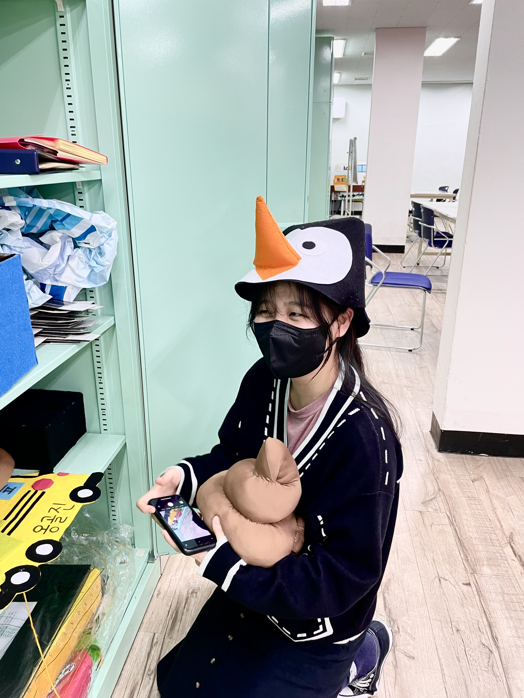
웹툰 Webtoon
" 나만의 이야기를 전달해보고 싶어. 나도 그려볼래 웹툰! "
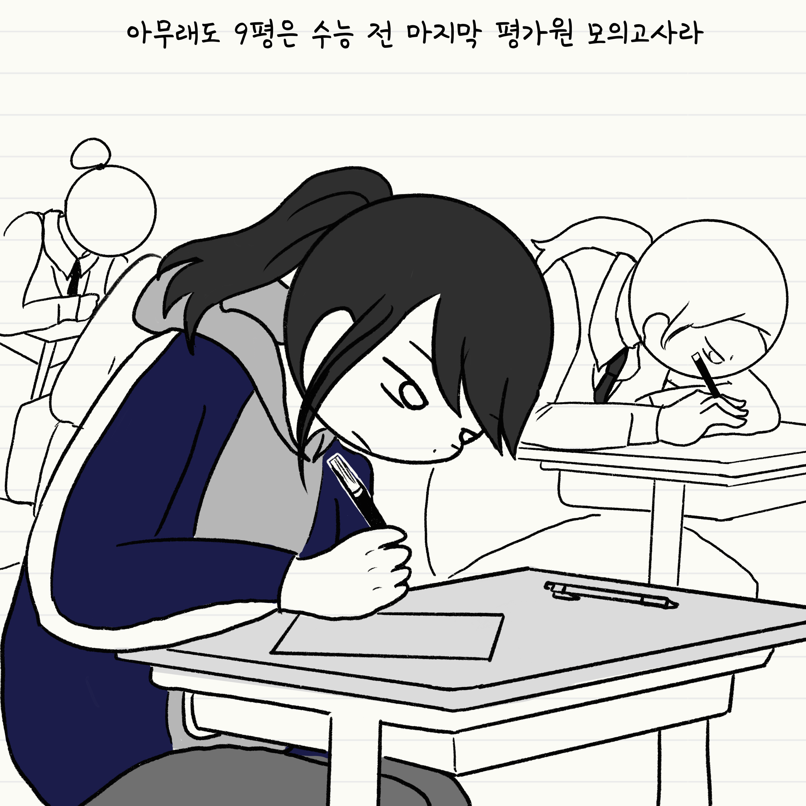
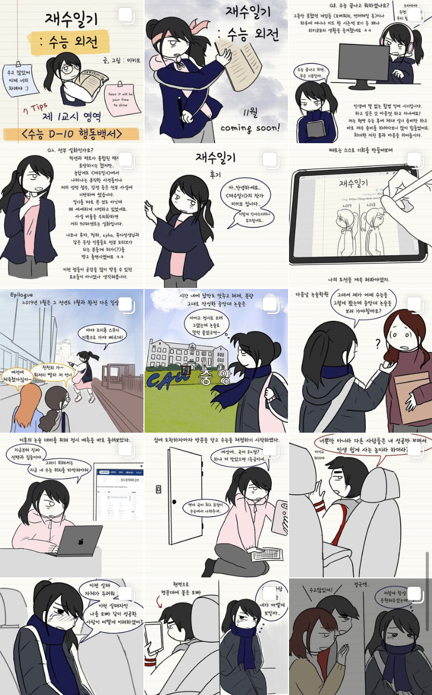
여름 방학 기간 동안에 재수 시절 경험을 떠올리며
"재수일기" 단편작을 제작하게 되었습니다. 친한 친구
10명만 팔로우 되어있었던 계정이 수험생들 사이에서
입소문을 타며 13화만에 팔로워 천명까지 달성하게 되어
정말 뿌듯했던 경험이었습니다.
"재수일기" 단편작을 제작하게 되었습니다. 친한 친구
10명만 팔로우 되어있었던 계정이 수험생들 사이에서
입소문을 타며 13화만에 팔로워 천명까지 달성하게 되어
정말 뿌듯했던 경험이었습니다.
언젠가는 현재의 삶을 "개발일기"로 그려낼 수 있기를 바라며..
코딩 Coding
" 이게 가능하다고? 더 좋은 방법도 있다고? 미래는 여기에 있구나! "
저의 첫 코딩 경험은 대학 강의를 통해서 접하게 되었습니다.
주변 개발자 지인들의 조언을 들으며 기술이 있으면 더 많은 것을
구현하고 발전해나갈 수 있다는 생각에 심장이 뛰었습니다.
첫 언어로 파이썬을 하다가 우연히 웹개발과 자바스크립트를 접하며
디자인 및 UX/UI에도 관심이 많은 저의 특성상 프런트엔드 분야가
더 맞을 것 같다는 생각을 하여 이쪽으로 우회(?)하게 되었습니다.
주변 개발자 지인들의 조언을 들으며 기술이 있으면 더 많은 것을
구현하고 발전해나갈 수 있다는 생각에 심장이 뛰었습니다.
첫 언어로 파이썬을 하다가 우연히 웹개발과 자바스크립트를 접하며
디자인 및 UX/UI에도 관심이 많은 저의 특성상 프런트엔드 분야가
더 맞을 것 같다는 생각을 하여 이쪽으로 우회(?)하게 되었습니다.
비록 지금은 프런트로 시작하게 되었지만
차근차근 풀스택 개발자로 성장해나가는 것이 저의 목표입니다.
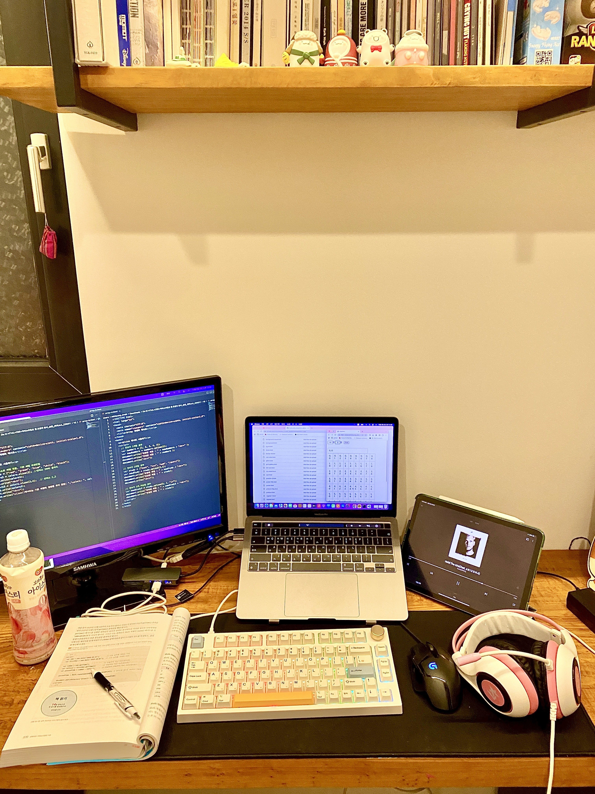
검도 Kendo
" 머리..! 손목....!! 허리.....!!!! "
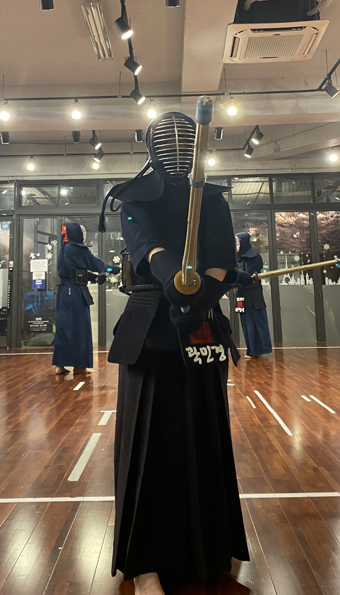
검도는 운동의 일환으로 성인이 되어서 시작하였습니다.
처음에는 마냥 멋있는 도복을 입을 생각에 시작하였지만
기대 이상으로 너무 재미있고 저의 성향과 잘 맞았습니다.
검도의 가장 큰 매력이라 한다면 남녀 구분없이 동등한
대련을 할 수 있다는 점입니다. 올해 유독 체력적으로,
정신적으로 소모되는 일이 많았는데 이 모든 일을 잘
헤쳐나갈 수 있도록 만들어 준 기반이기도 합니다.
처음에는 마냥 멋있는 도복을 입을 생각에 시작하였지만
기대 이상으로 너무 재미있고 저의 성향과 잘 맞았습니다.
검도의 가장 큰 매력이라 한다면 남녀 구분없이 동등한
대련을 할 수 있다는 점입니다. 올해 유독 체력적으로,
정신적으로 소모되는 일이 많았는데 이 모든 일을 잘
헤쳐나갈 수 있도록 만들어 준 기반이기도 합니다.
개발자로서 건강한 체력은 필수!
음식 Foods
" Food is the most primitive form of comfort. "
쉬는 날이면 가족이나 친구들과 맛집을 찾아가거나 분위기 좋은 카페에 가곤 합니다.
또 최근에는 몸을 생각해서 포케나 샤브샤브같은 건강식 맛집을 찾는 재미에 빠졌습니다.
그런 의미에서 맛집, 건강식 추천은 언제나 환영입니다.
또 최근에는 몸을 생각해서 포케나 샤브샤브같은 건강식 맛집을 찾는 재미에 빠졌습니다.
그런 의미에서 맛집, 건강식 추천은 언제나 환영입니다.
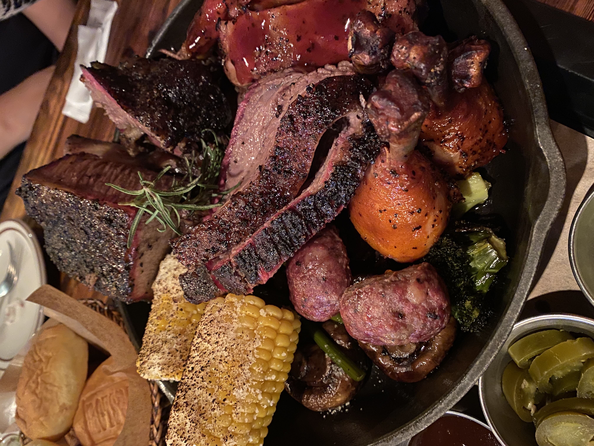
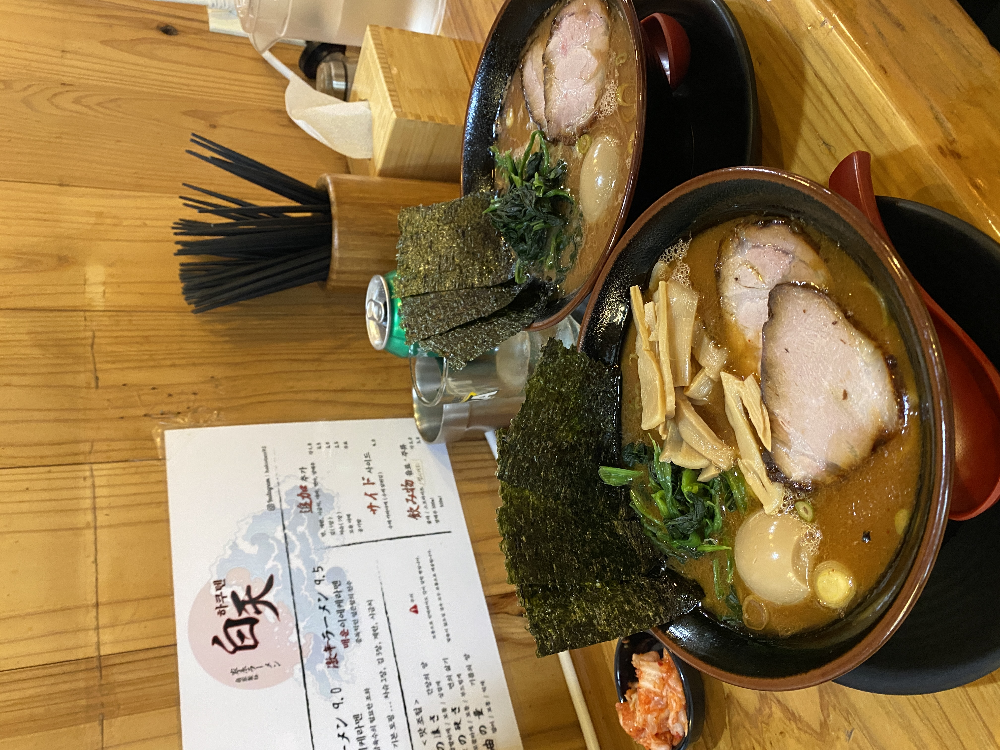

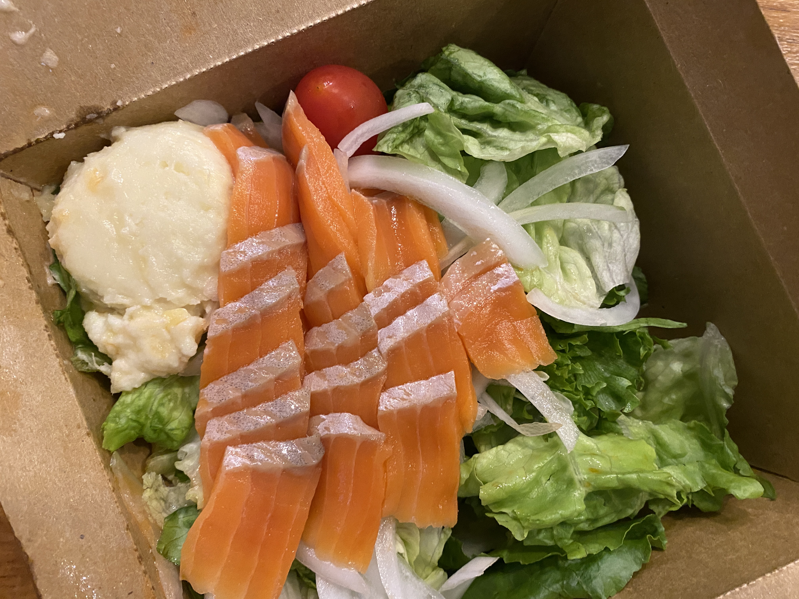
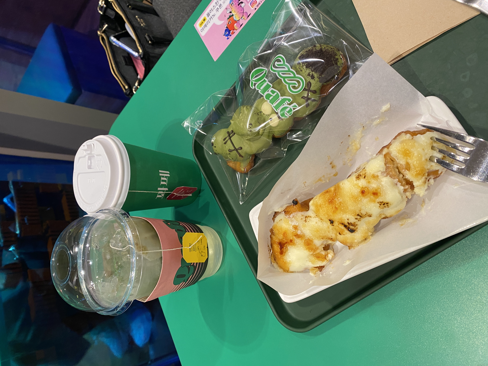
책 Books
" Think before you Speak. Read before you Think. "
부끄럽지만 꽤 오랜기간 독서를 등한시하다가 최근에 푹 빠지게 된 취미입니다.
성장하는 개발자가 되기 위해서는 다양한 분야를 다각적인 시각에서 분석할 줄 아는 능력이 필요합니다.
이를 위해 저는 다양한 장르별로 하루에 적어도 자기 전에 20페이지씩 꾸준히 읽는 것이 목표입니다.
이미 다 너무 유명한 서적들이지만 아래에는 제가 제일 추천하는 독서 top5입니다.
성장하는 개발자가 되기 위해서는 다양한 분야를 다각적인 시각에서 분석할 줄 아는 능력이 필요합니다.
이를 위해 저는 다양한 장르별로 하루에 적어도 자기 전에 20페이지씩 꾸준히 읽는 것이 목표입니다.
이미 다 너무 유명한 서적들이지만 아래에는 제가 제일 추천하는 독서 top5입니다.
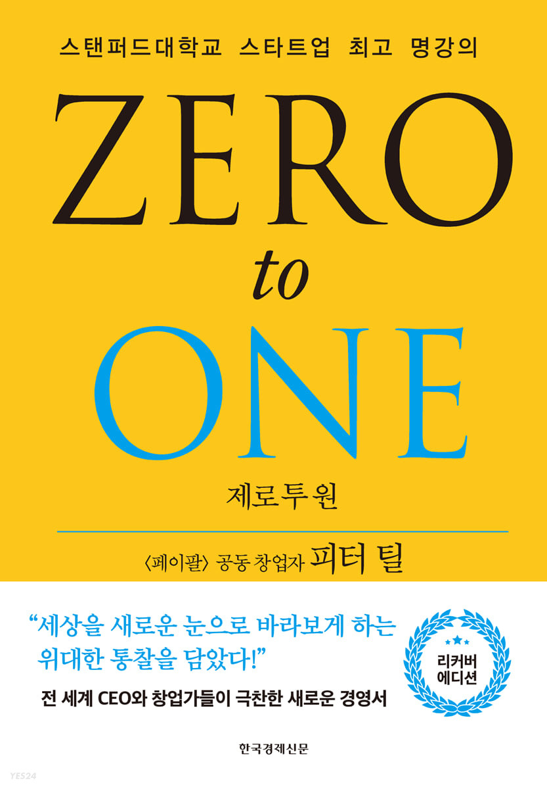
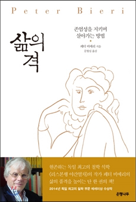
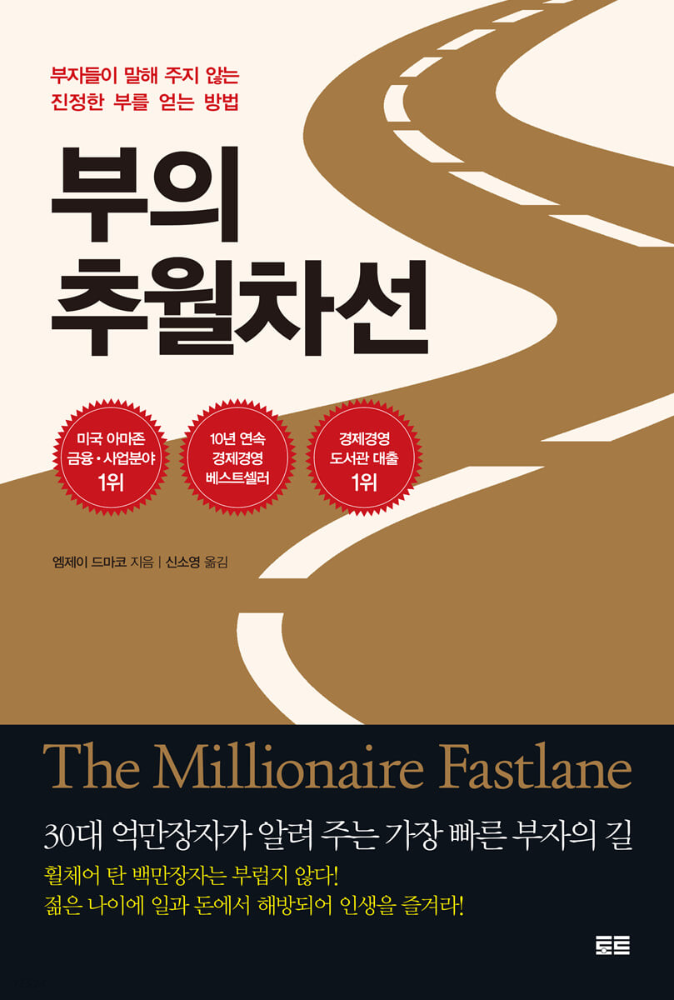
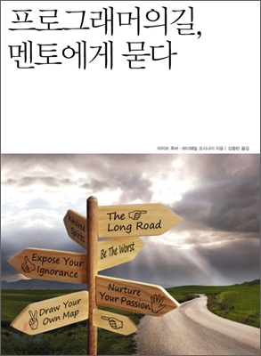
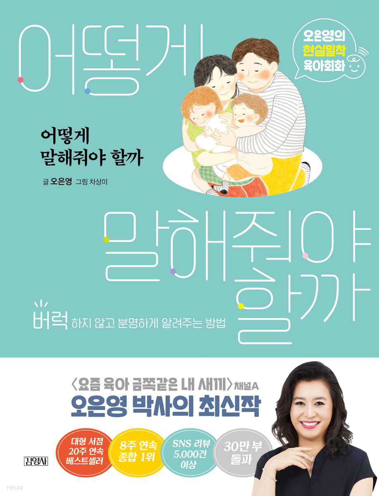